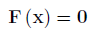
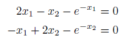

System of Nonlinear Equations (SNLE)
Introduction
A system of nonlinear equations has the following form:

Where F is a n x 1 vector of functions containing the nonlinear equations.
The goal is to set the function values of all equations to zero by selecting a value of x.
Example Problem

The above system of equations contains two nonlinear functions. These should be written as a vectorized Matlab function or anonymous function:
% Nonlinear Equations
fun = @(x) [ 2*x(1) - x(2) - exp(-x(1));
-x(1) +
2*x(2) - exp(-x(2))];
This can be solved using the OPTI Toolbox as follows:
% Build OPTI Problem
Opt = opti('fun',fun,'ndec',2)
% Solve
x0 = [-5;5];
x = solve(Opt,x0)
And the solution is:
x =
0.5671
0.5671
Considerations
The OPTI Toolbox is only setup to recognise SNLE problems which include more than 1 variable. This is due to the Unconstrained Nonlinear Optimization (UNO) problem having the same calling form if only one variable is present. However you can override OPTI's problem identification by using the probtype argument:
optObj = opti( ... ,'probtype','SNLE');
Note OPTI will also only solve problems with n equations and n variables when using a SNLE solver.
As with UNO and NLP problems, if the constructor cannot determine the number decision variables in your problem (for example all arguments are nonlinear functions), then you must supply this explicitly to optiprob.
Copyright © 2011-2013 Jonathan Currie (I2C2)